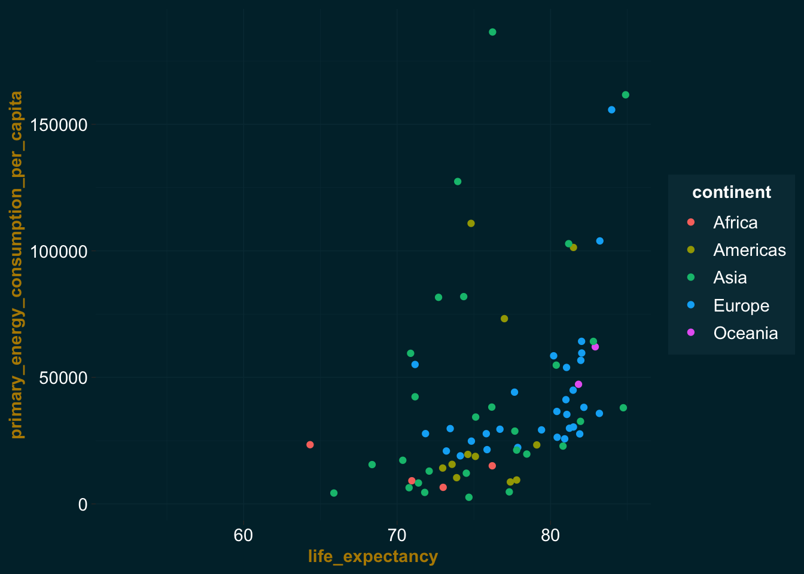

Exploration des jeux de données
Réimportation des données
Code
data_energy_cons_clean <- as_tibble(read.csv(file = "data/processed/owid-energy-consumption-data.csv"))
data_life_clean <- as_tibble(read.csv(file = "data/processed/gm-life-expectancy-data.csv"))Vous pouvez télécharger les deux jeux de données nettoyés ci-dessous.
Code
zip(zipfile = "data/processed/data_package.zip", files = c("data/processed/owid-energy-consumption-data.csv", "data/processed/gm-life-expectancy-data.csv"))Ou télécharger le .zip suivant contenant les deux fichiers : ZIP
Première exploration
Observons à quoi ressemblent nos données.
Dans le jeu Energy, nous avons les 18 variables suivantes :
continent, iso_code, country, year, population, biofuel_consumption, coal_consumption, fossil_fuel_consumption, gas_consumption, hydro_consumption, low_carbon_consumption, nuclear_consumption, oil_consumption, other_renewable_consumption, primary_energy_consumption, renewables_consumption, solar_consumption, wind_consumption
Nous avons 219 pays dans le jeu Energy et 195 pays observés dans le jeu Life Expectancy.
Quelques statistiques
Energy
Code
data_energy_cons_clean %>%
skim() %>%
kable()| skim_type | skim_variable | n_missing | complete_rate | character.min | character.max | character.empty | character.n_unique | character.whitespace | numeric.mean | numeric.sd | numeric.p0 | numeric.p25 | numeric.p50 | numeric.p75 | numeric.p100 | numeric.hist |
|---|---|---|---|---|---|---|---|---|---|---|---|---|---|---|---|---|
| character | continent | 0 | 1.0000000 | 4 | 9 | 0 | 6 | 0 | NA | NA | NA | NA | NA | NA | NA | NA |
| character | iso_code | 0 | 1.0000000 | 3 | 3 | 0 | 219 | 0 | NA | NA | NA | NA | NA | NA | NA | NA |
| character | country | 0 | 1.0000000 | 4 | 32 | 0 | 219 | 0 | NA | NA | NA | NA | NA | NA | NA | NA |
| numeric | year | 0 | 1.0000000 | NA | NA | NA | NA | NA | 1.973103e+03 | 3.527834e+01 | 1900.000 | 1.944000e+03 | 1983.0000 | 2.003000e+03 | 2.021000e+03 | ▃▃▃▆▇ |
| numeric | population | 105 | 0.9935948 | NA | NA | NA | NA | NA | 2.683007e+07 | 1.009892e+08 | 1833.000 | 1.242297e+06 | 5655064.0000 | 1.707491e+07 | 1.425894e+09 | ▇▁▁▁▁ |
| numeric | biofuel_consumption | 15555 | 0.0511194 | NA | NA | NA | NA | NA | 1.750296e+01 | 5.325610e+01 | 0.000 | 0.000000e+00 | 1.7265 | 1.113350e+01 | 4.158700e+02 | ▇▁▁▁▁ |
| numeric | coal_consumption | 12197 | 0.2559629 | NA | NA | NA | NA | NA | 3.635408e+02 | 1.591186e+03 | 0.000 | 3.122250e+00 | 30.6280 | 1.464560e+02 | 2.393606e+04 | ▇▁▁▁▁ |
| numeric | fossil_fuel_consumption | 12200 | 0.2557799 | NA | NA | NA | NA | NA | 1.126322e+03 | 3.167427e+03 | 0.097 | 1.151510e+02 | 275.7240 | 8.837950e+02 | 3.622259e+04 | ▇▁▁▁▁ |
| numeric | gas_consumption | 12174 | 0.2573659 | NA | NA | NA | NA | NA | 2.714109e+02 | 8.072350e+02 | 0.000 | 8.603500e+00 | 51.4900 | 2.129660e+02 | 8.506917e+03 | ▇▁▁▁▁ |
| numeric | hydro_consumption | 12178 | 0.2571219 | NA | NA | NA | NA | NA | 8.460001e+01 | 2.342560e+02 | 0.000 | 1.160000e+00 | 12.7240 | 5.990150e+01 | 3.471190e+03 | ▇▁▁▁▁ |
| numeric | low_carbon_consumption | 12178 | 0.2571219 | NA | NA | NA | NA | NA | 1.710000e+02 | 4.878965e+02 | 0.000 | 3.125000e+00 | 29.0250 | 1.186910e+02 | 7.568308e+03 | ▇▁▁▁▁ |
| numeric | nuclear_consumption | 12335 | 0.2475447 | NA | NA | NA | NA | NA | 6.572366e+01 | 2.386440e+02 | 0.000 | 0.000000e+00 | 0.0000 | 2.269325e+01 | 2.303296e+03 | ▇▁▁▁▁ |
| numeric | oil_consumption | 12171 | 0.2575490 | NA | NA | NA | NA | NA | 4.876528e+02 | 1.230013e+03 | 0.097 | 6.367900e+01 | 140.1235 | 3.838988e+02 | 1.121408e+04 | ▇▁▁▁▁ |
| numeric | other_renewable_consumption | 12221 | 0.2544989 | NA | NA | NA | NA | NA | 8.552775e+00 | 2.970564e+01 | 0.000 | 0.000000e+00 | 0.1210 | 3.729000e+00 | 5.423670e+02 | ▇▁▁▁▁ |
| numeric | primary_energy_consumption | 6837 | 0.5829317 | NA | NA | NA | NA | NA | 5.850661e+02 | 2.465123e+03 | 0.000 | 5.145500e+00 | 46.4135 | 2.914692e+02 | 4.379089e+04 | ▇▁▁▁▁ |
| numeric | renewables_consumption | 12178 | 0.2571219 | NA | NA | NA | NA | NA | 1.077307e+02 | 3.234790e+02 | 0.000 | 2.440000e+00 | 17.1260 | 7.868350e+01 | 6.545095e+03 | ▇▁▁▁▁ |
| numeric | solar_consumption | 12221 | 0.2544989 | NA | NA | NA | NA | NA | 3.008373e+00 | 2.653056e+01 | 0.000 | 0.000000e+00 | 0.0000 | 1.500000e-02 | 8.556530e+02 | ▇▁▁▁▁ |
| numeric | wind_consumption | 12221 | 0.2544989 | NA | NA | NA | NA | NA | 8.297709e+00 | 5.954927e+01 | 0.000 | 0.000000e+00 | 0.0000 | 1.780000e-01 | 1.715493e+03 | ▇▁▁▁▁ |
Life Expectancy at Birth
Code
data_life_clean %>%
skim() %>%
kable()| skim_type | skim_variable | n_missing | complete_rate | character.min | character.max | character.empty | character.n_unique | character.whitespace | numeric.mean | numeric.sd | numeric.p0 | numeric.p25 | numeric.p50 | numeric.p75 | numeric.p100 | numeric.hist |
|---|---|---|---|---|---|---|---|---|---|---|---|---|---|---|---|---|
| character | iso_code | 0 | 1 | 3 | 3 | 0 | 195 | 0 | NA | NA | NA | NA | NA | NA | NA | NA |
| character | country | 0 | 1 | 3 | 30 | 0 | 195 | 0 | NA | NA | NA | NA | NA | NA | NA | NA |
| numeric | year | 0 | 1 | NA | NA | NA | NA | NA | 1950.38390 | 86.50872 | 1800.00 | 1876.0 | 1952.000 | 2024.00 | 2100.00 | ▇▇▇▇▇ |
| numeric | life_expectancy | 0 | 1 | NA | NA | NA | NA | NA | 53.35266 | 21.32014 | 1.01 | 32.9 | 50.015 | 73.96 | 94.42 | ▁▇▃▅▅ |
Life Expectancy at Birth
Tâche : calculer le temps écoulé en jours entre la première année que des données ont été récoltées pour chacun des pays et la production de ce rapport
Identifions d’abord la première année pour chaque pays.
Code
# source : https://stackoverflow.com/questions/60460203/finding-year-of-first-occurrence-in-r
life_country <- data_life_clean %>%
# ne conserver que les variables utiles à la tâche
select(country, year) %>%
# grouper les observation par pays et ordonner selon l'année
group_by(country) %>%
arrange(country, year) %>%
# ne conserver que la première année pour chaque pays
slice_min(order_by = year, n = 1)
first_year <- unique(life_country$year)Nous nous retrouvons donc avec les années suivantes : 1800, 1950
Puisque nous n’avons pas la date exacte dans le jeu de données, mais seulement l’année, nous établirons cette date au 1er juillet, soit au milieu de l’année, pour calculer le nombre de jours écoulés.
Code
# préciser une date exacte
first_year <- as.Date(paste0(first_year, "-07-01"))
# calculer le nombre de jours écoulés
# source code : https://bookdown.org/Tazinho/Tidyverse-Cookbook/dates-and-times.html
# source timezone : https://rdrr.io/r/base/timezones.html
days_passed <- difftime(lubridate::ymd(first_year, tz = Sys.timezone()),
lubridate::ymd(today(), tz = Sys.timezone()),
units = "days") %>%
as.double() %>%
round() %>%
abs()
countries_1800 <- paste(life_country$country[life_country$year == "1800"], collapse = ", ")
countries_1950 <- paste(life_country$country[life_country$year == "1950"], collapse = ", ")
tibble(c(countries_1800, countries_1950), lubridate::year(first_year), days_passed) %>%
rename(first_year = `lubridate::year(first_year)`,
countries = `c(countries_1800, countries_1950)`) %>%
kable()| countries | first_year | days_passed |
|---|---|---|
| Afghanistan, Albania, Algeria, Angola, Antigua and Barbuda, Argentina, Armenia, Australia, Austria, Azerbaijan, Bahamas, Bahrain, Bangladesh, Barbados, Belarus, Belgium, Belize, Benin, Bhutan, Bolivia, Bosnia and Herzegovina, Botswana, Brazil, Brunei, Bulgaria, Burkina Faso, Burundi, Cambodia, Cameroon, Canada, Cape Verde, Central African Republic, Chad, Chile, China, Colombia, Comoros, Congo, Dem. Rep., Congo, Rep., Costa Rica, Cote d’Ivoire, Croatia, Cuba, Cyprus, Czech Republic, Denmark, Djibouti, Dominican Republic, Ecuador, Egypt, El Salvador, Equatorial Guinea, Eritrea, Estonia, Ethiopia, Fiji, Finland, France, Gabon, Gambia, Georgia, Germany, Ghana, Greece, Grenada, Guatemala, Guinea, Guinea-Bissau, Guyana, Haiti, Honduras, Hong Kong, China, Hungary, Iceland, India, Indonesia, Iran, Iraq, Ireland, Israel, Italy, Jamaica, Japan, Jordan, Kazakhstan, Kenya, Kiribati, Kuwait, Kyrgyz Republic, Lao, Latvia, Lebanon, Lesotho, Liberia, Libya, Lithuania, Luxembourg, Macedonia, FYR, Madagascar, Malawi, Malaysia, Maldives, Mali, Malta, Mauritania, Mauritius, Mexico, Micronesia, Fed. Sts., Moldova, Mongolia, Montenegro, Morocco, Mozambique, Myanmar, Namibia, Nepal, Netherlands, New Zealand, Nicaragua, Niger, Nigeria, North Korea, Norway, Oman, Pakistan, Palestine, Panama, Papua New Guinea, Paraguay, Peru, Philippines, Poland, Portugal, Qatar, Romania, Russia, Rwanda, Samoa, Sao Tome and Principe, Saudi Arabia, Senegal, Serbia, Seychelles, Sierra Leone, Singapore, Slovak Republic, Slovenia, Solomon Islands, Somalia, South Africa, South Korea, South Sudan, Spain, Sri Lanka, St. Lucia, St. Vincent and the Grenadines, Sudan, Suriname, Swaziland, Sweden, Switzerland, Syria, Taiwan, Tajikistan, Tanzania, Thailand, Timor-Leste, Togo, Tonga, Trinidad and Tobago, Tunisia, Turkey, Turkmenistan, Uganda, Ukraine, United Arab Emirates, United Kingdom, United States, Uruguay, Uzbekistan, Vanuatu, Venezuela, Vietnam, Yemen, Zambia, Zimbabwe | 1800 | 81256 |
| Andorra, Dominica, Marshall Islands, Monaco, Nauru, Palau, San Marino, St. Kitts and Nevis, Tuvalu | 1950 | 26470 |
Combinaison des deux jeux
Code
data_merged <- merge(data_energy_cons_clean,
data_life_clean,
by = c("country", "year", "iso_code")) %>%
tibble()Afin de simplifier l’analyse, nous allons mettre les différentes consommations par habitant et les convertir en kW/h.
Code
# convertir les consommations par habitant et en kilowatt/heure
data_merged_per_capita <- data_merged %>%
mutate(across(.cols = contains("consumption"), .fns = ~ .x / population * 1000000000, .names = "{.col}_per_capita", .keep = "all")) %>%
select(!biofuel_consumption:wind_consumption)
kable(slice_sample(data_merged_per_capita, n = 5))| country | year | iso_code | continent | population | life_expectancy | biofuel_consumption_per_capita | coal_consumption_per_capita | fossil_fuel_consumption_per_capita | gas_consumption_per_capita | hydro_consumption_per_capita | low_carbon_consumption_per_capita | nuclear_consumption_per_capita | oil_consumption_per_capita | other_renewable_consumption_per_capita | primary_energy_consumption_per_capita | renewables_consumption_per_capita | solar_consumption_per_capita | wind_consumption_per_capita |
|---|---|---|---|---|---|---|---|---|---|---|---|---|---|---|---|---|---|---|
| Angola | 2006 | AGO | Africa | 20162338 | 56.96 | NA | NA | NA | NA | NA | NA | NA | NA | NA | 2453.237 | NA | NA | NA |
| Netherlands | 1983 | NLD | Europe | 14369651 | 76.33 | NA | 4272.129 | 52690.63 | 23815.61 | 0 | 760.0045 | 708.7159 | 24602.82 | 51.28865 | 53450.637 | 51.28865 | 0 | 0 |
| Bulgaria | 1945 | BGR | Europe | 6953599 | 51.72 | NA | NA | NA | NA | NA | NA | NA | NA | NA | NA | NA | NA | NA |
| Costa Rica | 2017 | CRI | Americas | 4993849 | 79.83 | NA | NA | NA | NA | NA | NA | NA | NA | NA | 12726.857 | NA | NA | NA |
| Cambodia | 1992 | KHM | Asia | 9718217 | 58.60 | NA | NA | NA | NA | NA | NA | NA | NA | NA | 224.321 | NA | NA | NA |
Visualisation
Espérance de vie selon l’année
Code
data_merged_per_capita %>%
group_by(year) %>%
ggplot() +
geom_line(mapping = aes(x = year, y = life_expectancy, color = continent, group = country),
na.rm = TRUE) +
my_theme()On constate rapidement une baisse de l’espérance de vie lors des deux gueres mondiales. Les autres points qui se trouvent sous la masse principale indiquent probablement des événements précis qui ont fait plusieurs morts dans des pays en particulier.
Évolution de la population du Canada
Code
data_merged_per_capita %>%
filter(country == "Canada") %>%
ggplot() +
geom_line(mapping = aes(x = year, y = population, colour = country),
na.rm = TRUE) +
my_theme()
Consommation d’énergie fossile vs renouvelable (par habitant)
Code
data_merged_per_capita %>%
ggplot() +
geom_point(mapping = aes(x = fossil_fuel_consumption_per_capita, y = renewables_consumption_per_capita, color = continent),
na.rm = TRUE) +
my_theme()On peut constater que l’Asie est une grande consommatrice d’énergie fossile, tandis que l’Europe a une tendance vers le renouvelable. Il faut tout de même pas se leurer puisque les deux axes ne sont pas gradués de la même façon. La consommation d’énergie renouvelable est bien en-deça de celle des énergies fossiles.
Consommation d’énergie par habitant vs espérance de vie en 2020
Code
data_merged_per_capita %>%
filter(year == 2020) %>%
ggplot() +
geom_point(mapping = aes(x = life_expectancy, y = primary_energy_consumption_per_capita, color = continent),
na.rm = TRUE) +
my_theme()
On peut observer une légère tendance à consommer plus par année là où l’on vie plus longtemps.
Évolution de la consommation d’énergie primaire par habitant
Code
data_merged_per_capita %>%
ggplot() +
geom_line(mapping = aes(x = year, y = primary_energy_consumption_per_capita, color = continent, group = country),
na.rm = TRUE) +
xlim(1960,2025) +
my_theme()Citation
@online{levasseur-raymond2023,
author = {Amélie Levasseur-Raymond},
title = {Exploration des jeux de données},
date = {2023-08-12},
url = {https://amelie-lr.github.io/FAS1002_projet-finsession//exploration.html},
langid = {fr}
}